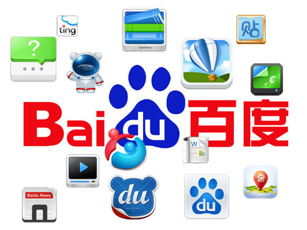

Abount Name
Our name was inspired by a poem written more than 800 years ago during the Song Dynasty. The poem compares the search for a retreating beauty amid chaotic glamour with the search for one's dream while confronted by life's many obstacles. "…hundreds and thousands of times, for her I searched in chaos, suddenly, I turned by chance, to where the lights were waning, and there she stood." Baidu, whose literal meaning is “hundreds of times”, represents a persistent search for the ideal.
To best serve our customers, our sales efforts consist of direct sales teams in first tier cities and third-party distributors in lower tier cities. This allows us to better penetrate each market and tailor our support and personal interaction based on customers’ needs. Today, our online marketing platform serves hundreds of thousands of small- and medium-sized enterprises (SMEs) and many branded multinational customers. The measurable ROI offered by our online marketing platform has made it one of the most effective marketing platforms for companies targeting the Chinese market. We will continue to strive to provide an extra level of value-added sales and customer service to address a wide range of customer needs. Our focus is to help the market continue to develop and educate the many companies who don’t understand the benefits of search engine marketing so that we can help them grow their businesses.
About Origin
Baidu was founded in 2000 by Internet pioneer Robin Li, creator of visionary search technology Hyperlink
Analysis, with the mission of providing people with the best way to find information and connect users
with services. Over the past decade we have strived to fulfill this mission by listening carefully to our
users’
needs and wants. To provide intelligent, relevant search results for the tens of billions of queries
that
are
entered into our search platform every day, we focus on powering the best technology optimized for
up-to-date
local tastes and preferences. Our deep understanding of Chinese language and culture is central to our
success
and this kind of knowledge allows us to tailor our search technology for our users’ needs. Just to cite
one
example, we believe there are at least 38 ways of saying "I" in the Chinese language. It is important
that
we
recognize these nuances to effectively address our users’ requests.
services. Over the past decade we have strived to fulfill this mission by listening carefully to our
users’
needs and wants. To provide intelligent, relevant search results for the tens of billions of queries
that
are
entered into our search platform every day, we focus on powering the best technology optimized for
up-to-date
local tastes and preferences. Our deep understanding of Chinese language and culture is central to our
success
and this kind of knowledge allows us to tailor our search technology for our users’ needs. Just to cite
one
example, we believe there are at least 38 ways of saying "I" in the Chinese language. It is important
that
we
recognize these nuances to effectively address our users’ requests.
About Such
We provide our users with many channels to find and share information. In addition to our core web search product, we power many popular community-based products, such as Baidu PostBar, the world’s first and largest Chinese-language query-based searchable online community platform, Baidu Knows, the world’s largest Chinese-language interactive knowledge-sharing platform, and Baidu Encyclopedia, the world’s largest user-generated Chinese-language encyclopedia, to name but a few. Beyond these marquee products we also offer dozens of helpful vertical search-based products, such as Maps, Image Search, Video Search, News Search, and many more. We power these through our cutting-edge technology, continually innovating to enhance these services. Our new Box Computing Open Platform brings users deep-linked content and even applications they can use directly through their search box. We believe that Box Computing will dramatically improve people’s search experience and become ubiquitous across all Internet devices including computers and mobile platforms.
In addition to serving individual users, we also serve as a media platform for online marketing customers. Our business model is mainly based on a performance-oriented marketing platform for businesses to cost effectively reach relevant Internet users. We offer performance-based online marketing services and display advertisements through both Baidu organic websites and our affiliated websites (our Union business). Our affiliated websites lead traffic to us through integrating a Baidu search box into their sites and/or by displaying relevant contextual promotional links for our customers. The majority of our revenue is derived from performance-based online marketing services and our customers pay on a cost per click basis – that is, our customers only pay when their paid-link is clicked through and they get the “lead”. Our goal is to give our customers an online marketing platform that has a wide range of functions which they can use to meet their marketing needs and an extensive selection of tools for managing their accounts as well as data for analyzing and optimizing ROI.
You don’t need us to tell you that China’s Internet space is booming. With the world’s largest Internet user population – 564 million as of end of 2012 – and a long way to go to reach internet penetration levels of developed countries, China’s internet is growing in both influence and sophistication. And as more and more Chinese come online, Baidu continues to innovate to meet their increasingly diverse tastes. With our goal of best serving the needs of our users and customers with intelligent and relevant solutions, we look forward to a robust future.